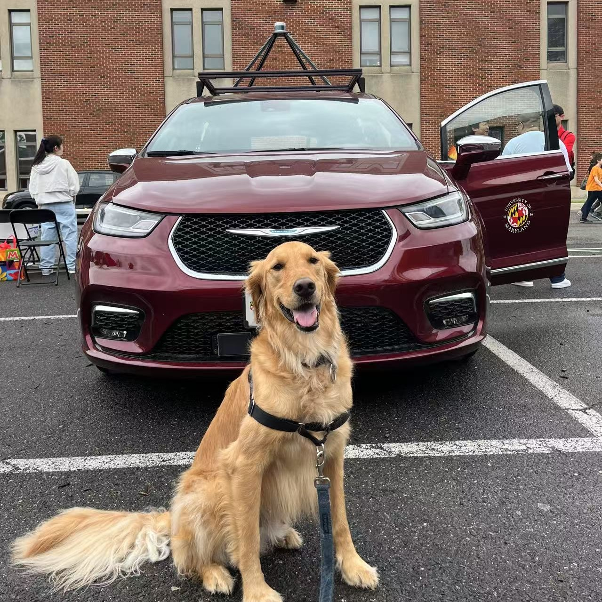
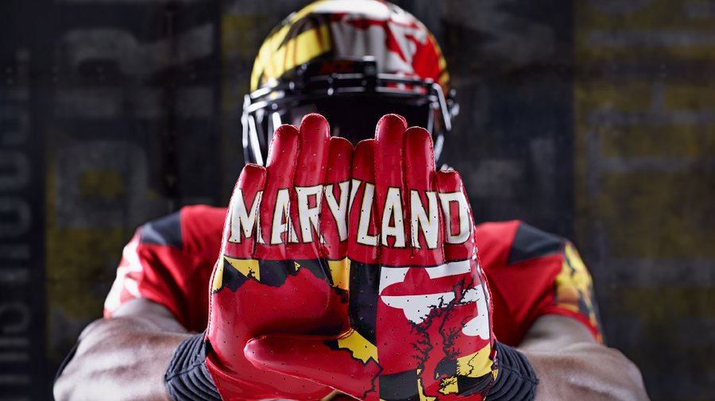

Dianwei Chen
Ph.D. Candidate · Civil & Environmental Engineering · University of Maryland, College Park
CARLA · SUMO · ROS · PRGP


Go Terps · University of MarylandAbout me
I build simulation and AI tools to make autonomous vehicles safer—especially when the road gets icy, the scenario gets messy, or the AI hits an edge case.
All models are wrong, but some are useful. — George Box
I'm Dianwei Chen, a Ph.D. candidate in Civil & Environmental Engineering at the University of Maryland, College Park, advised by Prof. Terry Yang. I'm part of the M-Trail Lab, where we work on cyberinfrastructure and digital twins for transportation. Before UMD, I received my M.S. in Electrical & Computer Engineering from The Ohio State University (with Prof. Keith Redmill and Prof. Umit Özgüner) and my B.E. from Zhejiang University.
My research sits at the intersection of reinforcement learning, digital twins, AV safety evaluation, and vision–language models. I focus on how to test and validate autonomous systems in conditions that are hard to replicate in the real world—winter weather, rare pedestrian behaviors, and safety-critical edge cases. To do that, I build and use high-fidelity simulation (e.g. CARLA–SUMO co-simulation), physics-informed models such as Physics Regularized Gaussian Processes (PRGP), and RL-based behavior models to stress-test AVs and find failure modes before they hit the road.
I also work on the bridge from simulation to deployment: I've contributed to ROS and Autoware integration on real test vehicles (including PCD mapping and trajectory planning) and care deeply about open-source, reproducible tools for the AV and smart-transportation community.
If you're interested in collaboration, internships, or just talking about safe autonomy and digital twins, feel free to reach out.
Research interests
Timeline
Education and research path.
- Undergraduate B.E., Zhejiang University Engineering foundation before graduate study in the U.S.
- Graduate · 2023 M.S. in Electrical & Computer Engineering, The Ohio State University Research with Prof. Keith Redmill and Prof. Umit Özgüner; thesis on deep RL and adversarial pedestrian modeling (IEEE IV 2023).
- Present Ph.D. in Civil & Environmental Engineering, University of Maryland M-Trail Lab, advised by Prof. Terry Yang — digital twins, AV safety, simulation (CARLA–SUMO), and vision–language models for edge-case evaluation.
Visitors & fun
Live visitor map by Map My Visitors. Below: page views, GitHub, and a random research tip.
Publications
Full list on Google Scholar.
Published
- Using Collision Momentum in Deep Reinforcement Learning–Based Adversarial Pedestrian Modeling IEEE Intelligent Vehicles Symposium (IV), 2023, pp. 1–6.
- Adversarial Pedestrian Modeling Based on Deep Reinforcement Learning Method by Using Collision Momentum Master’s Thesis, The Ohio State University, 2023.
- Synergizing AI and Digital Twins for Next-Generation Network Optimization, Forecasting, and Security IEEE Wireless Communications, vol. 32, no. 3, pp. 98–105, 2025.
- Reconstructing Physics-Informed Machine Learning for Traffic Flow Modeling: A Multi-Gradient Descent and Pareto Learning Approach Transportation Research Part C, 2025. arXiv:2505.13241
Preprints & Under Review
- Digital Twins in Intelligent Transportation and Communication Systems: A Survey Preprint, Zenodo, March 2026. DOI: 10.5281/zenodo.19136071. Zenodo · DOI
- Deep Reinforcement Learning for Advanced Longitudinal Control and Collision Avoidance in High-Risk Driving Scenarios arXiv:2404.19087, 2024. Accepted by TRB Annual Meeting 2026. arXiv
- Advanced Longitudinal Control and Collision Avoidance for High-Risk Edge Cases in Autonomous Driving Manuscript submitted to IEEE Transactions on Intelligent Vehicles, 2025. Accepted by TRB Annual Meeting 2026.
- Potential Failures of Physics-Informed Machine Learning in Traffic Flow Modeling: Theoretical and Experimental Analysis arXiv:2505.11491; submitted to Transportation Science, 2025. arXiv
- INSIGHT: Enhancing Autonomous Driving Safety through Vision-Language Models on Context-Aware Hazard Detection and Edge Case Evaluation arXiv:2502.00262; submitted to IEEE Intelligent Vehicles Symposium 2026. arXiv
- Customized Generative AI Agent for Transportation Engineering Practice: A Development and Continued Pre-Training Guideline Accepted by TRB Annual Meeting 2026; submitted to Journal of Transportation Engineering.
News
Recent updates — newest first.
-
Digital twin survey on Zenodo
Our survey Digital Twins in Intelligent Transportation and Communication Systems: A Survey (with Z. Zhang, X. T. Yang, S. Mao, Y. Liu) is available as a preprint on Zenodo — taxonomy of SV-DT, CV-DT, ENV-DT, NET-DT, SAFE-DT, and Twin of Twins (ToT).
-
TRB Annual Meeting 2026
Multiple works accepted for presentation at the Transportation Research Board Annual Meeting 2026 — see the Publications tab for details.
-
Publications & ongoing work
New and under-review work on longitudinal control, physics-informed traffic modeling, VLM-based hazard detection, and generative AI for transportation practice — see Publications.
Services
Academic and professional service.
Reviewer
- IEEE Intelligent Vehicles Symposium (IV)
- IEEE Intelligent Transportation Systems Conference (ITSC)
- IEEE/CVF Conference on Computer Vision and Pattern Recognition (CVPR)
- Journal of Urban Planning and Development (ASCE)
- Transportation Research Board Annual Meeting (TRB)
Teaching Assistant
- ENCE370 Introduction to Transportation Engineering and Planning (UMD, 3 credits)
Open source
- M-trail/NSF_OAC: Stochastic Simulation Platform for AV Safety in Winter (CARLA-SUMO, PRGP)
Personal
When I'm not working on autonomous vehicles, I'm happily spending time with our playful Golden Retriever, Max.
I enjoy building open-source tools for the AV community and advancing safe and trustworthy AI-driven transportation systems. Proud to be a Terp.